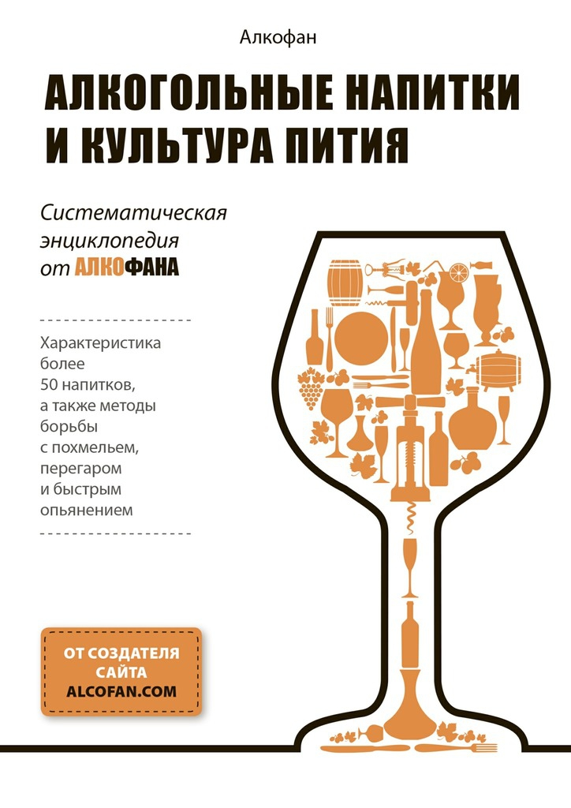

О культуре пития ... .

По материалам книги " Алкогольные напитки и культура пития . Систематическая энциклопедия от Алкофана "" Автор: " Алкофан " . "
А также из других источников Интернет
Уважаемый Читатель - после ознакомления с Книгой
рекомендую Вам заказать ее бумажное издание.
Книга для тех, кто хочет разбираться в спиртном на уровне «продвинутого пользователя»: знать нюансы технологии производства, историю, известные марки, коктейли и особенности употребления более чем 50 алкогольных напитков. Отдельное внимание уделено борьбе с быстрым опьянением, похмельем и перегаром. Полученные знания дадут возможность не только сполна насладиться выбранным напитком, но и стать признанным алкогольным экспертом в кругу друзей и близких, пропагандистом культуры пития.
Книга адресована широкому кругу любознательных читателей.
От Автора Сайта : Настоятельно рекомендую чрезвычайно интересный и полезный Интернет- ресурс : https://alcofan.com/
-
-
Коньяк, чача, кальвадос и другие бренди.
-
Виски, бурбон и другие зерновые дистилляты.